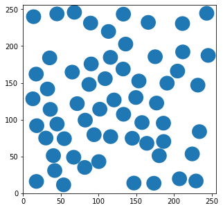

T = int(2e2)
alphas = np.linspace(0.2, 1.9, 40)
D = 0.5
reps = int(1e4)
tmsd_a = np.zeros((len(alphas), reps))
exp_a = np.zeros((len(alphas), 100))
taus = np.arange(0, 100)
vacf_a = np.zeros((len(alphas[alphas < 1]), len(taus)))
for idx_a, alpha in enumerate(tqdm(alphas)):
trajs = []
for rep in range(reps):
disp = models_phenom().disp_fbm(alpha, D, T)
# Generate trajectory
traj = np.cumsum(disp)
trajs.append(traj)
# Calculate tMSD(tlag = 1)
tmsd_a[idx_a, rep] = msd_analysis().tamsd(traj, t_lags = [1])
if rep < 100:
# Calculate exponent
exp_a[idx_a, rep] = msd_analysis().get_exponent(traj)
if alpha < 1:
trajs = np.vstack(trajs)
vacf_a[idx_a, :] = vacf(trajs = trajs, delta_t = 1, taus = taus)models_phenom
models_phenom
models_phenom ()
This class handles the generation of trajectories from different theoretical models.
FBM displacements generator
disp_fbm
disp_fbm (alpha:float, D:float, T:int, deltaT:int=1)
Generates normalized Fractional Gaussian noise. This means that, in general:
<x^2(t)> = 2Dt^alphaand in particular:
<x^2(t = 1)> = 2D| Type | Default | Details | |
|---|---|---|---|
| alpha | float | Anomalous exponent | |
| D | float | Diffusion coefficient | |
| T | int | Number of displacements to generate | |
| deltaT | int | 1 | Sampling time |
| Returns | numpy.array | Array containing T displacements of given parameters |
Properties of FBM
The following shows that the generated displacements have the desired properties. Namely, we can choose \(D\) and \(\alpha\) at will and the function will correctly normalize the displacements. For that, we generate trajectories and estimate parameters of the MSD and VACF from analysis class.
fig, ax = plt.subplots(1, 3, figsize = (14, 4), tight_layout = True)
ax[1].errorbar(alphas, exp_a.mean(1), yerr=exp_a.std(1)/np.sqrt(reps), capsize=2, color = plt.cm.RdYlGn(0))
plt.setp(ax[1], ylabel = r'Fitted $\alpha$', xlabel = r'$\alpha$', title = r'Fitting $\alpha$ from tMSD')
ax[1].grid()
ax[0].errorbar(alphas, tmsd_a.mean(1), yerr=tmsd_a.std(1)/np.sqrt(reps), capsize=2, c = plt.cm.RdYlGn(0))
plt.setp(ax[0], ylabel = r'$\left < x^2(t=1) \right>$', xlabel = r'$\alpha$', title = r'MSD at $t=1$')
ax[0].grid()
for idxv, va in enumerate(vacf_a):
ax[2].plot(taus, va, c = plt.cm.RdYlGn(idxv/vacf_a.shape[0]));
plt.setp(ax[2], xlim = (-1 , 7), xlabel = r'$\tau$', ylabel = 'VACF', title = r'Velocity Autocorrelation ($\alpha\in[0,1]$)')
ax[2].grid()
vec = alphas[alphas < 1]
normalize = mcolors.Normalize(vmin=vec.min(), vmax=vec.max())
colormap = plt.cm.RdYlGn
scalarmappaple = plt.cm.ScalarMappable(norm=normalize, cmap=colormap)
scalarmappaple.set_array(vec)
cbar = fig.colorbar(scalarmappaple, ax = ax[2])
cbar.set_label(r'$\alpha$')
C:\Users\Gorka\Anaconda3\envs\andi_dataset\lib\site-packages\fastcore\docscrape.py:225: UserWarning: potentially wrong underline length...
Parameters
------------ in
Given information of the anomalous exponents (alphas), diffusion coefficients (Ds), the function
samples these from a bounded Gaussian distribution with the indicated constraints (epsilon_a,...
else: warn(msg)_sample_diff_parameters
_sample_diff_parameters (alphas:list, Ds:list, num_states:int, epsilon_a:float, gamma_d:float)
Given information of the anomalous exponents (alphas), diffusion coefficients (Ds), the function samples these from a bounded Gaussian distribution with the indicated constraints (epsilon_a, gamma_d). Outputs the list of demanded alphas and Ds.
| Type | Details | |
|---|---|---|
| alphas | list | List containing the parameters to sample anomalous exponent in state (adapt to sampling function) |
| Ds | list | List containing the parameters to sample the diffusion coefficient in state (adapt to sampling function). |
| num_states | int | Number of diffusive states. |
| epsilon_a | float | Minimum distance between anomalous exponents of various states. |
| gamma_d | float | Factor between diffusion coefficient of various states. |
models_phenom._sample_diff_parameters(alphas = [[1,0.1]]*2,
Ds = [[1,10]]*2,
num_states=2,
epsilon_a = [0.5, 0.01], gamma_d = [2,1])([1.115597834914795, 0.5914573119483875],
[2.644760360927501, 7.380304450199705])We can test that this distances are taken into account when generating trajectories:
N = 1000; L = 50; T = 2;
epsilon_a=[0.5]; gamma_d = [0.75]
trajs, labels = models_phenom().multi_state(
epsilon_a=epsilon_a, gamma_d = gamma_d, # This is the important part
T = T, N = N, L = L,
Ds = np.array([[2, 0], [2, 0.2]]),
alphas = np.array([[1, 0], [0.75, 0.1]]),
return_state_num=True)fig, ax = plt.subplots(1,2,figsize = (6, 3), tight_layout = True)
alphas = labels[:,:,0].flatten()
Ds = labels[:,:,1].flatten()
states_num = labels[:,:,3].flatten()
for s in np.unique(states_num):
ax[0].hist(alphas[states_num == s], bins = 100, density = True);
ax[1].hist(Ds[states_num == s], bins = 100, density = True);
ax[0].set_title(fr'Distribution of $\alpha$ - $\epsilon_a = {epsilon_a[0]}$')
ax[1].set_title(fr'Distribution of $D$ - $\gamma_d = {gamma_d[0]}$')
plt.setp(ax, ylim = [0,10])
ax[0].set_xlim(0,1.1); ax[1].set_xlim(0,2.1)
ax[0].set_ylabel('Frequency')Text(0, 0.5, 'Frequency')Single state model
Particles diffusing according to a single diffusion state, as observed for some lipids in the plasma membrane or for nanoparticles in the cellular environment.
Single trajectory generator
C:\Users\Gorka\Anaconda3\envs\andi_dataset\lib\site-packages\fastcore\docscrape.py:225: UserWarning: potentially wrong underline length...
Parameters
----------- in
Generates a single state trajectory with given parameters.
...
else: warn(msg)
C:\Users\Gorka\Anaconda3\envs\andi_dataset\lib\site-packages\fastcore\docscrape.py:225: UserWarning: potentially wrong underline length...
Returns
---------- in
Generates a single state trajectory with given parameters.
...
else: warn(msg)_single_state_traj
_single_state_traj (T:int=200, D:float=1, alpha:float=1, L:float=None, deltaT:int=1)
Generates a single state trajectory with given parameters.
| Type | Default | Details | |
|---|---|---|---|
| T | int | 200 | Length of the trajectory |
| D | float | 1 | Diffusion coefficient |
| alpha | float | 1 | Anomalous exponent |
| L | float | None | Length of the box acting as the environment |
| deltaT | int | 1 | Sampling time |
| Returns | tuple | - pos: position of the particle - labels: anomalous exponent, D and state at each timestep. State is always free here. |
traj, labels = models_phenom._single_state_traj(D = 0.05, alpha = 1.5,
T =1000, L = 10)
fig, ax = plt.subplots(1, 3, figsize = (10, 2), tight_layout = True)
ax[0].plot(traj[:, 0], traj[:, 1], alpha = 0.5)
plt.setp(ax[0], xlabel = 'X', ylabel = 'Y')
ax[1].plot(traj[:, 0], '.', label = 'X')
ax[1].plot(traj[:, 1], '.', label = 'Y', )
plt.setp(ax[1], ylabel = 'Position', xlabel = 'Time')
ax[1].legend()
ax[2].plot(labels[:, 0], '.', label = r'$\alpha$')
ax[2].plot(labels[:, 1], '.', label = r'$D$' )
plt.setp(ax[2], ylabel = 'Label', xlabel = 'Time')
ax[2].legend()
for b in [0,10]:
ax[0].axhline(b, ls = '--', alpha = 0.3, c = 'k')
ax[0].axvline(b, ls = '--', alpha = 0.3, c = 'k')
ax[1].axhline(b, ls = '--', alpha = 0.3, c = 'k')Dataset generation
C:\Users\Gorka\Anaconda3\envs\andi_dataset\lib\site-packages\fastcore\docscrape.py:225: UserWarning: potentially wrong underline length...
Parameters
----------- in
Generates a dataset made of single state trajectories with given parameters.
...
else: warn(msg)
C:\Users\Gorka\Anaconda3\envs\andi_dataset\lib\site-packages\fastcore\docscrape.py:225: UserWarning: potentially wrong underline length...
Returns
---------- in
Generates a dataset made of single state trajectories with given parameters.
...
else: warn(msg)single_state
single_state (N:int=10, T:int=200, Ds:list=[1, 0], alphas:list=[1, 0], L:float=None)
Generates a dataset made of single state trajectories with given parameters.
| Type | Default | Details | |
|---|---|---|---|
| N | int | 10 | Number of trajectories in the dataset |
| T | int | 200 | Length of the trajectory |
| Ds | list | [1, 0] | If list, mean and variance from which to sample the diffusion coefficient. If float, we consider variance = 0. |
| alphas | list | [1, 0] | If list, mean and variance from which to sample the anomalous exponent. If float, we consider variance = 0. |
| L | float | None | Length of the box acting as the environment |
| Returns | tuple | - positions: position of the N trajectories. - labels: anomalous exponent, D and state at each timestep. State is always free here. |
N = 500; L = 5; T = 100;
alpha = [0.8, 0.1]; D = 1.2
trajs, labels = models_phenom().single_state(N = N,
L = L,
T = T,
alphas = alpha,
Ds = D)
fig, ax = plt.subplots()
ax.hist(labels[0,:,0], bins = 50)
plt.setp(ax, title = r'Distribution of $\alpha$', xlabel = r'$\alpha$', ylabel = 'Frequency');
plot_trajs(trajs, L, N)Multiple state model
Particles diffusing according to a time-dependent multi-state (2 or more) model of diffusion, as observed for example in proteins undergoing transient changes of \(D\) and/or \(\alpha\) as induced by, e.g., allosteric changes or ligand binding.
Single trajectory generator
_multiple_state_traj
_multiple_state_traj (T=200, M=[[0.95, 0.05], [0.05, 0.95]], Ds=[1, 0.1], alphas=[1, 1], L=None, deltaT=1, return_state_num=False, init_state=None)
Generates a 2D multi state trajectory with given parameters.
| Type | Default | Details | |
|---|---|---|---|
| T | int | 200 | Length of the trajectory |
| M | list | [[0.95, 0.05], [0.05, 0.95]] | Transition matrix between diffusive states. |
| Ds | list | [1, 0.1] | Diffusion coefficients of the diffusive states. Must have as many Ds as states defined by M. |
| alphas | list | [1, 1] | Anomalous exponents of the diffusive states. Must have as many alphas as states defined by M. |
| L | NoneType | None | Length of the box acting as the environment |
| deltaT | int | 1 | Sampling time |
| return_state_num | bool | False | If True, returns as label the number assigned to the state at each time step. |
| init_state | NoneType | None | If True, the particle starts in state 0. If not, sample initial state. |
| Returns | tuple | - pos: position of the particle - alphas_t: anomalous exponent at each step - Ds_t: diffusion coefficient at each step. - label_diff_state: particles state (can be either free or directed for alpha ~ 2) at each step. - state (optional): state label at each step. |
T = 1000; L = 100
traj, labels = models_phenom._multiple_state_traj(T = T,
L = L,
alphas = [0.2, 0.7],
Ds = [1.5, 2],
return_state_num=True)
fig, ax = plt.subplots(1, 3, figsize = (9, 3), tight_layout = True)
ax[0].plot(traj[:, 0], traj[:, 1], alpha = 0.5)
plt.setp(ax[0], xlabel = 'X', ylabel = 'Y')
ax[1].plot(traj[:, 0], label = 'X')
ax[1].plot(traj[:, 1], label = 'Y', )
plt.setp(ax[1], ylabel = 'Position', xlabel = 'Time')
ax[1].legend()
ax[2].plot(labels[:, 0], '.', label = r'$\alpha$')
ax[2].plot(labels[:, 1], '.', label = r'$D$' )
ax[2].plot(labels[:, 3], '.', label = r'$state \#$', alpha = 0.3 )
plt.setp(ax[2], ylabel = 'Label', xlabel = 'Time')
ax[2].legend()
for b in [0,L]:
ax[0].axhline(b, ls = '--', alpha = 0.3, c = 'k')
ax[0].axvline(b, ls = '--', alpha = 0.3, c = 'k')
ax[1].axhline(b, ls = '--', alpha = 0.3, c = 'k')
Dataset generation
multi_state
multi_state (N=10, T=200, M:<built-infunctionarray>=[[0.9, 0.1], [0.1, 0.9]], Ds:<built-infunctionarray>=[[1, 0], [0.1, 0]], alphas:<built-infunctionarray>=[[1, 0], [1, 0]], gamma_d=[1], epsilon_a=[0], L=None, return_state_num=False, init_state=None)
Generates a dataset of 2D multi state trajectory with given parameters.
| Type | Default | Details | |
|---|---|---|---|
| N | int | 10 | Number of trajectories |
| T | int | 200 | Length of the trajectory |
| M | array | [[0.9, 0.1], [0.1, 0.9]] | Transition matrix between diffusive states |
| Ds | array | [[1, 0], [0.1, 0]] | List of means and variances from which to sample the diffusion coefficient of each state. If element size is one, we consider variance = 0. |
| alphas | array | [[1, 0], [1, 0]] | List of means and variances from which to sample the anomalous exponent of each state. If element size is one, we consider variance = 0. |
| gamma_d | list | [1] | Minimum factor between D of diffusive states (see ._sampling_diff_parameters) |
| epsilon_a | list | [0] | Distance between alpha of diffusive states (see ._sampling_diff_parameters) |
| L | NoneType | None | Length of the box acting as the environment |
| return_state_num | bool | False | If True, returns as label the number assigned to the state at each time step. |
| init_state | NoneType | None | If True, the particle starts in state 0. If not, sample initial state. |
| Returns | tuple | - trajs (array TxNx2): particles position - labels (array TxNx2): particles labels (see ._multi_state for details on labels) |
N = 100; L = 50; T = 100;
trajs, labels = models_phenom().multi_state(N = N, T = T, L = L,
M = np.array([[0.95 , 0.05],[0.05, 0.95]]),
Ds = np.array([[1, 0], [1, 0.5]]),
alphas = np.array([[1, 0.01], [0.5, 0.02]]),
epsilon_a=[0.4], gamma_d = [0.75],
return_state_num=True)We can first check the parameter distributions:
fig, ax = plt.subplots(1, 2, figsize = (8, 3), tight_layout = True)
# Diffusion coefficients
ax[0].hist(labels[labels[:,:,3] == 0, 1].flatten(), label = f'State 1 - % = {(labels[:,:,3] == 0).sum()/np.prod(labels.shape[:2])}')
ax[0].hist(labels[labels[:,:,3] == 1, 1].flatten(), label = f'State 2 - % = {(labels[:,:,3] == 1).sum()/np.prod(labels.shape[:2])}')
plt.setp(ax[0], title = r'Distribution of $D$', xlabel = r'$D$', ylabel = 'Frequency');
# Anomalous exponents
ax[1].hist(labels[labels[:,:,3] == 0, 0].flatten(), label = f'State 1 - # = {(labels[:,:,3] == 0).sum()}')
ax[1].hist(labels[labels[:,:,3] == 1, 0].flatten(), label = f'State 2 - # = {(labels[:,:,3] == 1).sum()}')
plt.setp(ax[1], title = r'Distribution of $\alpha$', xlabel = r'$\alpha$', ylabel = 'Frequency');
ax[0].legend()<matplotlib.legend.Legend>
And then see some examples of trajectories:
plot_trajs(trajs, L, N, labels = labels, plot_labels = True)
Dimerization
Particles diffusing according to a 2-state model of diffusion, with transient changes of \(D\) and/or \(\alpha\) induced by encounters with other particles, observed for example in protein dimerization.
Auxiliary functions
Distance calculator
_get_distance
_get_distance (x)
Given a matrix of size Nx2, calculates the distance between the N particles.
| Type | Details | |
|---|---|---|
| x | array | Particles positions |
| Returns | array | Distance between particles |
Escaping dynamics
_make_escape
_make_escape (Pu, label, diff_state)
Given an unbinding probablity (Pu), the current labeling of particles (label) and the current state of particle (diff_state, either bound, 1, or unbound, 0), simulate an stochastic binding mechanism.
| Type | Details | |
|---|---|---|
| Pu | float | Unbinding probablity |
| label | array | Current labeling of the particles (i.e. to which condensate they belong) |
| diff_state | array | Current state of the particles |
| Returns | tuple | New labeling and diffusive state of the particles |
Clustering dynamics
_make_condensates
_make_condensates (Pb, label, diff_state, r, distance, max_label)
Given a binding probability Pb, the current label of particles (label), their current diffusive state (diff_state), the particle size (r), their distances (distance) and the label from which binding is not possible (max_label), simulates a binding mechanism.
| Type | Details | |
|---|---|---|
| Pb | float | Binding probablity. |
| label | array | Current labeling of the particles (i.e. to which condensate they belong) |
| diff_state | array | Current state of the particles |
| r | float | Particle size. |
| distance | array | Distance between particles |
| max_label | int | Maximum label from which particles will not be considered for binding |
| Returns | tuple | New labeling and diffusive state of the particles |
Here is a test in which some particles, distributed randomly through a bounded space, first bind and then unbind using the previous defined functions:
# Binding and unbinding probabilities
Pb = 0.8; Pu = 0.5
# Generate the particles
N = 200; L = 10; r = 1; max_n = 2; Ds = np.ones(100)
pos = np.random.rand(N, 2)*L
# Put random labels (label = which condensate you belong). diff_state is zero because all are unbound)
label = np.arange(N)#np.random.choice(range(500), N, replace = False)
diff_state = np.zeros(N).astype(int)
# Define max_label bigger than max of label so everybody binds
max_label = max(label)+2
# Calculate distance between particles
distance = models_phenom._get_distance(pos)
print('# of free particles:')
print(f'Before binding: {len(label)}')
# First make particle bind:
lab, ds = models_phenom._make_condensates(Pb, label, diff_state, r, distance, max_label)
print(f'After binding: {np.unique(lab[np.argwhere(ds == 0)], return_counts=True)[0].shape[0]}')
# Then we do unbinding:
lab, ds = models_phenom._make_escape(Pu, lab, ds)
print(f'After unbinding: {np.unique(lab[np.argwhere(ds == 0)], return_counts=True)[0].shape[0]}')# of free particles:
Before binding: 200
After binding: 4
After unbinding: 106Stokes drag
_stokes
_stokes (D)
Applies a Stokes-Einstein-like transformation to two diffusion coefficients.
| Type | Details | |
|---|---|---|
| D | tuple | Diffusion coefficients of the two binding particles. |
| Returns | float | Resulting diffusion coefficient. |
Time evolution
dimerization
dimerization (N=10, T=200, L=100, r=1, Pu=0.1, Pb=0.01, Ds:<built- infunctionarray>=[[1, 0], [0.1, 0]], alphas:<built- infunctionarray>=[[1, 0], [1, 0]], epsilon_a=0, stokes=False, return_state_num=False, deltaT=1)
Generates a dataset of 2D trajectories of particles perfoming stochastic dimerization.
| Type | Default | Details | |
|---|---|---|---|
| N | int | 10 | Number of trajectories |
| T | int | 200 | Length of the trajectory |
| L | int | 100 | Length of the box acting as the environment |
| r | int | 1 | Radius of particles. |
| Pu | float | 0.1 | Unbinding probability. |
| Pb | float | 0.01 | Binding probability. |
| Ds | array | [[1, 0], [0.1, 0]] | List of means and variances from which to sample the diffusion coefficient of each state. If element size is one, we consider variance = 0. |
| alphas | array | [[1, 0], [1, 0]] | List of means and variances from which to sample the anomalous exponent of each state. If element size is one, we consider variance = 0. |
| epsilon_a | int | 0 | Distance between alpha of diffusive states (see ._sampling_diff_parameters) |
| stokes | bool | False | If True, applies a Stokes-Einstein like coefficient to calculate the diffusion coefficient of dimerized particles. If False, we use as D resulting from the dimerization the D assigned to the dimerized state of one of the two particles. |
| return_state_num | bool | False | If True, returns as label the number assigned to the state at each time step. |
| deltaT | int | 1 | Sampling time |
| Returns | tuple | - trajs (array TxNx2): particles position - labels (array TxNx2): particles labels (see ._multi_state for details on labels) |
N = 500; L = 50; r = 1; T = 100
Pu = 0.1 # Unbinding probability
Pb = 1 # Binding probability
# Diffusion coefficients of two states
stokes = True
Ds = np.array([[2, 0.01], [1e-5, 0]]) # because stokes = True, we don't care about the second state
# Anomalous exponents for two states
alphas = np.array([[1, 0], [1, 0.2]])
trajs, labels = models_phenom().dimerization(N = N,
L = L,
r = r,
T = T,
Pu = Pu, # Unbinding probability
Pb = Pb, # Binding probability
Ds = Ds, # Diffusion coefficients of two states
alphas = alphas, # Anomalous exponents for two states,
return_state_num = True,
stokes = True, epsilon_a=0.2
)fig, ax = plt.subplots(1, 2, figsize = (8, 3), tight_layout = True)
# Diffusion coefficients
ax[0].hist(labels[labels[:,:,3] == 0, 1].flatten(), label = f'State 1 - % = {(labels[:,:,3] == 0).sum()/np.prod(labels.shape[:2])}')
ax[0].hist(labels[labels[:,:,3] == 1, 1].flatten(), label = f'State 2 - % = {(labels[:,:,3] == 1).sum()/np.prod(labels.shape[:2])}')
plt.setp(ax[0], title = r'Distribution of $D$', xlabel = r'$D$', ylabel = 'Frequency');
# Anomalous exponents
ax[1].hist(labels[labels[:,:,3] == 0, 0].flatten(), label = f'State 1 - # = {(labels[:,:,3] == 0).sum()}')
ax[1].hist(labels[labels[:,:,3] == 1, 0].flatten(), label = f'State 2 - # = {(labels[:,:,3] == 1).sum()}')
plt.setp(ax[1], title = r'Distribution of $\alpha$', xlabel = r'$\alpha$', ylabel = 'Frequency');
ax[0].legend()<matplotlib.legend.Legend>
plot_trajs(trajs, L, N, labels = labels, plot_labels = True)
Immobile traps
Particles diffusing according to a space-dependent 2-state model of diffusion, representing proteins being transiently immobilized at specific locations as induced by binding to immobile structures, such as cytoskeleton-induced molecular pinning.
models_phenom._update_bound(_update_bound
_update_bound (mask, N, pos, Nt, traps_pos, Pb, Pu, r)
Binds and unbinds particles to traps based on their position and binding and unbinding probabilities
| Type | Details | |
|---|---|---|
| mask | array | Current binding array |
| N | int | Number of particles |
| pos | array | Position of particles |
| Nt | int | Number of traps |
| traps_pos | array | Position of traps |
| Pb | float in [0,1] | Binding probability |
| Pu | float in [0,1] | Unbinding probability |
| r | float | Trap radius |
| Returns | array | Updated binding array |
immobile_traps
immobile_traps (N=10, T=200, L=100, r=1, Pu=0.1, Pb=0.01, Ds=[1, 0], alphas=[1, 0], Nt=10, traps_pos:<built- infunctionarray>=None, deltaT=1)
Generates a dataset of 2D trajectories of particles diffusing in an environment with immobilizing traps.
| Type | Default | Details | |
|---|---|---|---|
| N | int | 10 | Number of trajectories |
| T | int | 200 | Length of the trajectory |
| L | int | 100 | Length of the box acting as the environment |
| r | int | 1 | Radius of particles. |
| Pu | float | 0.1 | Unbinding probability. |
| Pb | float | 0.01 | Binding probability. |
| Ds | list | [1, 0] | Mean and variance from which to sample the diffusion coefficient of the free state. If float, we consider variance = 0 |
| alphas | list | [1, 0] | Mean and variance from which to sample the anomalous exponent of the free state. If float, we consider variance = 0 |
| Nt | int | 10 | Number of traps |
| traps_pos | array | None | Positions of the traps. Can be given by array or sampled randomly if None. |
| deltaT | int | 1 | Sampling time. |
| Returns | tuple | - trajs (array TxNx2): particles position - labels (array TxNx2): particles labels (see ._multi_state for details on labels) |
N = 50; T = 100; L = 100
# Binding and unbinding probs
Pb = 1; Pu = 0.1
# D and alpha
alpha = 1.2
D = [1, 0.2]
# Traps properties
Nt = 100
r = 1
traps_pos = np.random.rand(Nt, 2)*L
trajs, labels = models_phenom().immobile_traps(N = N, T = T, L = L,
r = r,
Pu = Pu, Pb = Pb,
Ds = D, alphas = alpha,
Nt = Nt, traps_pos = traps_pos
)plot_trajs(trajs, L, N, labels = labels, plot_labels = True, traps_positions=traps_pos)Confinement
Particles diffusing according to a space-dependent 2-state model of diffusion, observed for example in proteins being transiently confined in regions where diffusion properties might change, e.g., the confinement induced by clathrin-coated pits on the cell membrane. In the limit of a high density of trapping regions, this model reproduces the picket-and-fence model used to describe the effect of the actin cytoskeleton on transmembrane proteins.
Auxiliary functions
Distribute compartments
_distribute_circular_compartments
_distribute_circular_compartments (Nc, r, L)
Distributes circular compartments over an environment without overlapping. Raises a warning and stops when no more compartments can be inserted.
| Type | Details | |
|---|---|---|
| Nc | float | Number of compartments |
| r | float | Size of the compartments |
| L | float | Side length of the squared environment. |
| Returns | array | Position of the centers of the compartments |
fig, ax = plt.subplots(figsize = (5,5))
Nc = 60; r = 10; L = 256;
comp_center = models_phenom._distribute_circular_compartments(Nc, r, L)
for c in comp_center:
circle = plt.Circle((c[0], c[1]), r)
ax.add_patch(circle)
ax.set_xlim(0,L)
ax.set_ylim(0,L)(0.0, 256.0)
Reflection inside circles
_reflected_position
_reflected_position (circle_center, circle_radius, beg, end, precision_boundary=0.0001)
Given the begining and end of a segment crossing the boundary of a circle, calculates the new position considering that boundaries are fully reflective.
| Type | Default | Details | |
|---|---|---|---|
| circle_center | float | Center of the circle | |
| circle_radius | float | Radius of the circle | |
| beg | tuple | Position (in 2D) of the begining of the segment | |
| end | tuple | Position (in 2D) of the begining of the segment | |
| precision_boundary | float | 0.0001 | Small area around the real boundary which is also considered as boundary. For numerical stability |
| Returns | tuple | - Reflected position - Intersection point |
circle_radius = 2;
circle_center = [0,0]
beg = np.array([0.8, 0])+circle_center
end = np.array([2.5, -0.8])+circle_center
final_point, intersect = models_phenom._reflected_position(circle_center, circle_radius, beg, end)
fig, ax = plt.subplots(figsize = (3, 3))
circle = plt.Circle(circle_center, circle_radius, facecolor = 'w', ec = 'C0', label = 'Compartment', zorder = -1)
ax.add_patch(circle)
ax.plot([beg[0],end[0]], [beg[1], end[1]], '-o', c = 'C1', label = 'Displacement segment')
ax.plot([circle_center[0], intersect[0]], [circle_center[1], intersect[1]], c = 'C2')
ax.plot([intersect[0], final_point[0]], [intersect[1], final_point[1]], '-o', c = 'C4', label = 'Resulting reflection')
ax.set_ylim(circle_center[1]-circle_radius*1.5, circle_center[1]+circle_radius*1.5)
ax.set_xlim(circle_center[0]-circle_radius*1.5, circle_center[0]+circle_radius*1.5)
ax.legend(fontsize = 8)<matplotlib.legend.Legend>
Single trajectory generator
_confinement_traj
_confinement_traj (T=200, L=100, Ds=[1, 0.1], alphas=[1, 1], r=1, comp_center=None, Nc=10, trans=0.1, deltaT=1)
Generates a 2D trajectory of particles diffusing in an environment with partially transmitting circular compartments.
| Type | Default | Details | |
|---|---|---|---|
| T | int | 200 | Length of the trajectory |
| L | int | 100 | Length of the box acting as the environment |
| Ds | list | [1, 0.1] | Diffusion coefficients of the two diffusive states (first free, the confined). Size must be 2. |
| alphas | list | [1, 1] | Anomalous exponents of the two diffusive states (first free, the confined). Size must be 2. |
| r | int | 1 | Radius of the compartments. |
| comp_center | NoneType | None | If given, center of the compartments. If None, centers are uniformly sampled. |
| Nc | int | 10 | Number of compartments |
| trans | float | 0.1 | Transmittance of the boundaries |
| deltaT | int | 1 | Sampling time. |
| Returns | tuple | - pos (array Tx2): particles position - labels (array Tx2): particles labels (see ._multi_state for details on labels) |
N = 50; L = 20
Nc = 15; r = 1; L = 20
Ds = [1, 0.1]
r , L, Nc = (20, 256, 20)
comp_center = models_phenom._distribute_circular_compartments(Nc = Nc, r = r, L = L)
trajs, labels = models_phenom()._confinement_traj(trans = 0.1, Nc = Nc, r = r, L = L, T =200, comp_center=comp_center, Ds = Ds)
fig, axs = plt.subplots(1,2, figsize = (6,3), tight_layout = True)
ax = axs[0]
for c in comp_center:
circle = plt.Circle((c[0], c[1]), r, facecolor = 'None', edgecolor = 'C0')
ax.add_patch(circle)
ax.scatter(trajs[:,0], trajs[:,1], c = plt.cm.cividis(labels[:,-1]/2), zorder = -1, s = 2)
plt.setp(axs[0], xlim = (0,L), ylim = (0,L), xlabel = 'X', ylabel = 'Y')
axs[1].plot(trajs[:,0], label = 'x');
axs[1].plot(trajs[:,1], label = 'y');
axs[1].legend()
plt.setp(axs[1], xlabel = 'Position', ylabel = 'Time')[Text(0.5, 0, 'Position'), Text(0, 0.5, 'Time')]
Dataset generation
confinement
confinement (N=10, T=200, L=100, Ds=[[1, 0], [0.1, 0]], alphas=[[1, 0], [1, 0]], gamma_d=[1], epsilon_a=[0], r=1, comp_center=None, Nc=10, trans=0.1, deltaT=1)
Generates a dataset of 2D trajectories of particles diffusing in an environment with partially transmitting circular compartments.
| Type | Default | Details | |
|---|---|---|---|
| N | int | 10 | Number of trajectories |
| T | int | 200 | Length of the trajectory |
| L | int | 100 | Length of the box acting as the environment |
| Ds | list | [[1, 0], [0.1, 0]] | List of means and variances from which to sample the diffusion coefficient of each state. If element size is one, we consider variance = 0. |
| alphas | list | [[1, 0], [1, 0]] | List of means and variances from which to sample the anomalous exponent of each state. If element size is one, we consider variance = 0. |
| gamma_d | list | [1] | Minimum factor between D of diffusive states (see ._sampling_diff_parameters). Size is number of states -1 (in this case size 1) |
| epsilon_a | list | [0] | Distance between alpha of diffusive states (see ._sampling_diff_parameters). Size is number of states -1 (in this case size 1) |
| r | int | 1 | Radius of the compartments. |
| comp_center | NoneType | None | If given, center of the compartments. If None, centers are uniformly sampled. |
| Nc | int | 10 | Number of compartments |
| trans | float | 0.1 | Transmittance of the boundaries |
| deltaT | int | 1 | Sampling time. |
| Returns | tuple | - pos (array Tx2): particles position - labels (array Tx2): particles labels (see ._multi_state for details on labels) |
N = 50; L = 20
Nc = 15; r = 1; L = 20
Ds = [[1,0], [150,0.1]]
alphas = [[1, 0], [1.5,0.1]]
r , L, Nc = (20, 256, 15)
comp_center = models_phenom._distribute_circular_compartments(Nc = Nc, r = r, L = L)
trajs, labels = models_phenom().confinement(N = N, L = L, comp_center = comp_center, trans = 0.1, Ds = Ds,
r = r, alphas = alphas, epsilon_a = [0])plot_trajs(trajs, L, N, labels = labels, plot_labels = True, comp_center = comp_center, r_cercle=r)